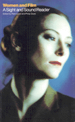

<body bgcolor="#FFFFFF" text="#000000" link="#0000FF" vlink="#CC0000" alink="#CC0000"><center><hr width="350" size="1" align="center" noshade>Contemporary essays capture images and issues, past and present<hr width="350" size="1" align="center" noshade><p><a href="https://cdcshoppingcart.uchicago.edu/Cart/ChicagoBook.aspx?ISBN=9781566391429&&PRESS=temple" target="_top">Buy this book!</a> | <a href="https://cdcshoppingcart.uchicago.edu/Cart/Cart.aspx?PRESS=temple" target="_top">View Cart</a> | <a href="https://cdcshoppingcart.uchicago.edu/Cart/Cart.aspx?PRESS=temple" target="_top">Check Out</a></p><p></p></center><!--none//--><h1>Women and Film</h1>
<H2>A Sight and Sound Reader</H2>
<h3>edited by Pam Cook and Philip Dodd</h3>
<P>cloth 1-56639-142-3 $71.50, Jan 94, <FONT COLOR=#990033>Out of Stock Unavailable</FONT>
<br>paper 1-56639-143-1 $28.95, Dec 93, <FONT COLOR=#990033>Out of Stock Unavailable</FONT>
<BR> 287 pp
5.5x8.25
30&nbsp;halftones
<BR>&nbsp;<br>Restricted: For sale only in the U.S. and Canada
</P><BLOCKQUOTE><I>"</I>Women and Film<I>'s scope and depth, its variety&#151from cultural criticism to one on one interviews&#151reflect an important new direction in the changing attitudes and debates that surround the representation of women in all aspects of contemporary cinema."</I>
<br>&#151<b>Susan Seidelman</b><I></I></BLOCKQUOTE>
<p>Brought together for the first time, these lively, sophisticated essays bring into focus contemporary debates regarding the representation of women in film and analyze women's practices as filmmakers and actors. <I>Sight and Sound</I>, the pioneering magazine of film criticism, has enlisted a distinguished group of cultural commentators&#151critics, scholars, novelists&#151to consider the roles of gender and sexuality in classic and recent cinema.
<p>Like <I>Sight and Sound</I> itself, the essays in this book are international in scope and represent the newest perspectives in cultural theory and criticism in a readily accessible style. Challenging dominant myths and the status quo in the industry, these provocative writers consider a wide range of fascinating topics that define the boundaries of traditional cinema and explore unmapped territory.
<p>Essays are generously illustrated with stills of films discussed, and each section contains a comprehensive bibliography and filmography.
<BR>&nbsp;<h2>Excerpt</h2><P>Excerpt available at <a href="http://www.temple.edu/tempress">www.temple.edu/tempress</a></p>
<BR>&nbsp;<h2>Reviews</h2>
<p><I>"This is a delightful collection of essays&#151smart, witty, socially informed and on-target. In its delicate, and all too rare, balance of intellectual sophistication and stylistic grace and accessibility, it offers a treat to both the general reader and the student of gender and film theory."</I>
<br>&#151<b>Elayne Rapping</b>
<BR>&nbsp;<h2>Contents</h2><P>
<p>Foreword &#150 Philip Dodd
<br>Border Crossings: Women and Film in Context &#150 Linda Ruth Williams
<br>Everything in Question: Women and Film in Prospect &#150 Pam Cook
<p><b>Part I: Icons</b>
<br>1. The Colour of Virtue: Lillian Gish, Whiteness and Femininity &#150 Richard Dyer
<br>2. Exorcised: Marlene Dietrich and German Nationalism &#150 Gertrud Koch
<br>3. From Dietrich to Madonna: Cross-Gender Icons &#150 Marjorie Garber
<br>4. Glamour and Suffering: Gong Li and the History of Chinese Stars &#150 Berenice Reynaud
<br>5. Denying Her Place: Hattie McDaniel's Surprising Acts &#150 Stephen Bourne
<br>6. Audrey Hepburn: Fashion, Film and the 50s &#150 Elizabeth Wilson
<br>7. Catherine Deneuve and French Womanhood &#150 Ginette Vincendeau
<br>8. Never a Victim: Jodie Foster, a New Kind of Female Hero &#150 B. Ruby Rich
<br>9. The Outsider: Whoopi Goldberg and Shopping Mall America &#150 Andrea Stuart
<br>10. A Body of Political Work: Tilda Swinton in Interview &#150 Michael O'Pray
<p><b>Part II: Women against the Grain</b>
<br>11. High and Low: The Transformation of the Rape-Revenge Movie &#150 Carol J. Clover
<br>12. 'Thelma & Louise' and the Tradition of the Male Road Movie &#150 Manohla Dargis
<br>13. The 'Alien' Trilogy: From Feminism to Aids &#150 Amy Taubin
<br>14. Working against the Grain: Women in Animation &#150 Irene Kotlarz
<br>15. Sisters under the Skin: Video and Blockbuster Erotic Thrillers &#150 Linda Ruth Williams
<p><b>Part III: Deconstructing Masculinity</b>
<br>16. The Beast's Beauty: Jean Gabin, Masculinity, and the French Hero &#150 Ginette Vincendeau
<br>17. Grabbing the Knife: 'The Silence of the Lambs' and the History of the Serial Killer Movie &#150 Amy Taubin
<br>18. 'Cape Fear' and Femininity as Destructive Power &#150 Pam Cook
<br>19. 'Falling Down' and the Rise of the Average White Male &#150 Carol J.Clover
<br>20. Men, Women, Children and the Baby Boom Movies &#150 Lizzie Francke
<br>21. Fathers and Daughters in French Cinema: From the 20s to 'La Belle Noiseuse' &#150 Ginette Vincendeau
<p><b>Part IV: Queer Alternatives</b>
<br>22. Homo Pomo: The New Queer Cinema &#150 B. Ruby Rich
<br>23. Queer Questions: A Response to B. Ruby Rich &#150 Pratibha Parmar
<br>24. Queer Male Cinema and Feminism &#150 Amy Taubin
<br>25. Female Misbehaviour: The Cinema of Monika Treut &#150 Julia Knight
<p><b>Part V: Women Direct</b>
<br>26. Lerii Riefenstahl: The Body Beautiful, Art Cinema and Fascist Aesthetics &#150 Thomas Elsaesser
<br>27. Chantal Akerinan and Feminist Film-Malting &#150 Angela McRobbie
<br>28. Monitoring Conformity: The Career of Doris D�rrie &#150 Carole Angier
<br>29. Mira Nair: A New Hybrid Cinema &#150 Andrea Stuart
<br>30. Against Crawling Realism: Sally Potter on 'Orlando' &#150 Walter Donohue
<br>31. Julie Dash: 'Daughters of the Dust' and a Black Aesthetic &#150 Karen Alexander
<br>32. Jane Campion: Costume Drama and Reclaiming Women's Past &#150 Stella Bruzzi
<p>Actors' Filmographies
<br>Directors' Filmographies
<br>Select Bibliography
<br>Contributors' Notes
<br>Index
</P><BR>&nbsp;<H2>About the Author(s)</H2>
<P><b>Pam Cook</b>, Associate Editor of <I>Sight and Sound</I> at the British Film Institute, has published widely on feminism and film and is co-author and editor of <I>The Cinema Book</I>.</P>
<P><b>Philip Dodd</b>, Editor of <I>Sight and Sound</I>, has written numerous articles on film and television and published several books, including <I>Englishness, Politics and Culture, 1880-1920</I>.</P>
<P>Contributors: Karen Alexander, Carole Angier, Stephen Bourne, Stella Brooks, Carol Clover, Jenny Diski, Richard Dyer, Thomas Elsaesser, Lizzie Franke, Julia Knight, Gertrud Koch, Irene Kollatz, Alison Light, Angela McRobbie, Berenice Reynaud, B. Ruby Rich, Cherry Smyth, Andrea Stuart, Amy Taubin, Ginette Vincendeau, Linda Ruth Williams, Elizabeth Wilson, Jeanette Winterson, and the editors.</P>
<BR><H2>Subject Categories</H2>
<p><A HREF="/tempress/general.html" TARGET="_top">General Interest</a>
<BR><A HREF="/tempress/cinema.html" TARGET="_top">Cinema Studies</a>
<BR><A HREF="/tempress/women.html" TARGET="_top">Women's Studies</a>
</p>
<BR><h2 class="inpageheading">In the series</H2>
<P><I><a href="http://www.temple.edu/tempress/culture.html" onMouseOver="window.status='Click for other books in this series!'; return true;" onMouseOut="window.status=''; return true;" target="_top">Culture and the Moving Image</a></i>, edited by Robert Sklar.
</p><p>The <I>Culture and the Moving Image</I> series, edited by Robert Sklar, seeks to publish innovative scholarship and criticism on cinema, television, and the culture of the moving image. The series will emphasize works that view these media in their broad cultural and social frameworks. Its themes will include a global perspective on the world-wide production of images; the links between film, television, and video art; a concern with issues of race, class, and gender; and an engagement with the growing convergence of history and theory in moving image studies.</p>
<p align="center"><a href="https://cdcshoppingcart.uchicago.edu/Cart/ChicagoBook.aspx?ISBN=9781566391429&&PRESS=temple" target="_top">Buy this book!</a> | <a href="https://cdcshoppingcart.uchicago.edu/Cart/Cart.aspx?PRESS=temple" target="_top">View Cart</a> | <a href="https://cdcshoppingcart.uchicago.edu/Cart/Cart.aspx?PRESS=temple" target="_top">Check Out</a></p><p><font face="Arial" size="1"><a href="copyright.html" onMouseOver="window.status='Web Copyright Policy';return true;" onMouseOut="window.status=''" title="Web Copyright Policy">&copy;</a> 2015 <a href="http://www.temple.edu" target="new" onMouseOver="window.status='Link to Temple University home page';return true;" onMouseOut="window.status=''" title="Link to Temple University home page">Temple University</a>. All Rights Reserved. http://www.temple.edu/tempress/titles/1044_reg.html</font></p>